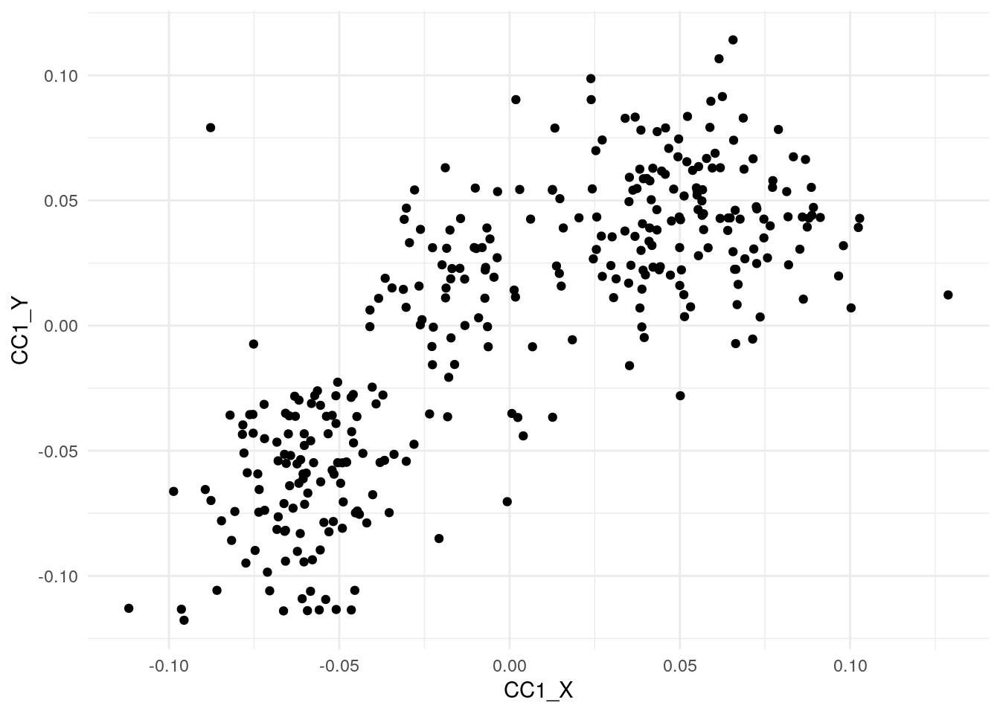

Last updated: 2024-04-15
Checks: 7 0
Knit directory: muse/
This reproducible R Markdown analysis was created with workflowr (version 1.7.1). The Checks tab describes the reproducibility checks that were applied when the results were created. The Past versions tab lists the development history.
Great! Since the R Markdown file has been committed to the Git repository, you know the exact version of the code that produced these results.
Great job! The global environment was empty. Objects defined in the global environment can affect the analysis in your R Markdown file in unknown ways. For reproduciblity it’s best to always run the code in an empty environment.
The command set.seed(20200712) was run prior to running
the code in the R Markdown file. Setting a seed ensures that any results
that rely on randomness, e.g. subsampling or permutations, are
reproducible.
Great job! Recording the operating system, R version, and package versions is critical for reproducibility.
Nice! There were no cached chunks for this analysis, so you can be confident that you successfully produced the results during this run.
Great job! Using relative paths to the files within your workflowr project makes it easier to run your code on other machines.
Great! You are using Git for version control. Tracking code development and connecting the code version to the results is critical for reproducibility.
The results in this page were generated with repository version d193658. See the Past versions tab to see a history of the changes made to the R Markdown and HTML files.
Note that you need to be careful to ensure that all relevant files for
the analysis have been committed to Git prior to generating the results
(you can use wflow_publish or
wflow_git_commit). workflowr only checks the R Markdown
file, but you know if there are other scripts or data files that it
depends on. Below is the status of the Git repository when the results
were generated:
Ignored files:
Ignored: .Rproj.user/
Ignored: r_packages_4.3.2/
Ignored: r_packages_4.3.3/
Unstaged changes:
Modified: analysis/cor_mat.Rmd
Note that any generated files, e.g. HTML, png, CSS, etc., are not included in this status report because it is ok for generated content to have uncommitted changes.
These are the previous versions of the repository in which changes were
made to the R Markdown (analysis/cca.Rmd) and HTML
(docs/cca.html) files. If you’ve configured a remote Git
repository (see ?wflow_git_remote), click on the hyperlinks
in the table below to view the files as they were in that past version.
| File | Version | Author | Date | Message |
|---|---|---|---|---|
| Rmd | d193658 | Dave Tang | 2024-04-15 | CCA |
Based on Introduction to Canonical Correlation Analysis (CCA) in R.
Canonical Correlation Analysis (CCA) is a dimension reduction technique like Principal Component Analysis (PCA). PCA aims to find the directions or projections that account for most of the observed variance. In comparison, CCA deals with two datasets and aims to find directions or projections that account for most of co-variance between two data sets.
To try to understand the intuition behind CCA, imagine there is one or more variables generating two high-dimensional data sets \(X\) and \(Y\). Here, the data sets \(X\) and \(Y\) are observables and we don’t know the latent variable(s) behind the two data sets. By performing CCA, we can identify the canonical variates that are highly correlated to the unknown latent variable. Basically, CCA helps us remove the noise in the two datasets and gets to the canonical variable that captures the hidden variable.
We will use Palmer Penguin data and the {CCA} package; install them if necessary.
install.packages("palmerpenguins")
install.packages("CCA")Load {CCA}.
suppressPackageStartupMessages(library(CCA))
packageVersion("CCA")[1] '1.2.2'Load data.
library(palmerpenguins)
data("penguins", package = 'palmerpenguins')
penguins <- tidyr::drop_na(penguins)
penguins# A tibble: 333 × 8
species island bill_length_mm bill_depth_mm flipper_length_mm body_mass_g
<fct> <fct> <dbl> <dbl> <int> <int>
1 Adelie Torgersen 39.1 18.7 181 3750
2 Adelie Torgersen 39.5 17.4 186 3800
3 Adelie Torgersen 40.3 18 195 3250
4 Adelie Torgersen 36.7 19.3 193 3450
5 Adelie Torgersen 39.3 20.6 190 3650
6 Adelie Torgersen 38.9 17.8 181 3625
7 Adelie Torgersen 39.2 19.6 195 4675
8 Adelie Torgersen 41.1 17.6 182 3200
9 Adelie Torgersen 38.6 21.2 191 3800
10 Adelie Torgersen 34.6 21.1 198 4400
# ℹ 323 more rows
# ℹ 2 more variables: sex <fct>, year <int>We will split the penguin’s body measurements into two datasets. Just for illustration of CCA, we will assume species/island is the hidden variable and the two “split” body measurements are our two data matrices. In this simple example, clearly the data matrices captures the underlies the “species” variable. And then we will perform CCA and infer canonical covariates and show that the canonical covariates captures species variable, our hidden factor.
Our data matrix \(X\) contains bill depth and bill length from the penguins data. We will also scale the variables to put them on the same scale. Here we use scale function to center and scale the columns.
X <- penguins |>
dplyr::select(bill_depth_mm, bill_length_mm) |>
scale()Our data matrix \(Y\) contains flipper length and bill length from the penguins data. We will also scale the columns in \(Y\) data matrix.
Y <- penguins |>
dplyr::select(flipper_length_mm,body_mass_g) |>
scale()
head(Y) flipper_length_mm body_mass_g
[1,] -1.4246077 -0.5676206
[2,] -1.0678666 -0.5055254
[3,] -0.4257325 -1.1885721
[4,] -0.5684290 -0.9401915
[5,] -0.7824736 -0.6918109
[6,] -1.4246077 -0.7228585CCA aims to find the associations between two data matrices (two sets of variables) \(X\) and \(Y\). CCA’s goal is to find the linear projection of the first data matrix that is maximally correlated with the linear projection of the second data matrix.
To perform classical CCA, we use cancor(); this function
computes canonical covariates between two input data matrices. By
default cancor() centers the columns of data matrices.
cc_results <- cancor(X,Y)The cancor() function returns a list containing the
correlation between the variables and the coefficients.
str(cc_results)List of 5
$ cor : num [1:2] 0.7876 0.0864
$ xcoef : num [1:2, 1:2] 0.0316 -0.0382 0.0467 0.0414
..- attr(*, "dimnames")=List of 2
.. ..$ : chr [1:2] "bill_depth_mm" "bill_length_mm"
.. ..$ : NULL
$ ycoef : num [1:2, 1:2] -0.0562 0.00151 -0.09748 0.11251
..- attr(*, "dimnames")=List of 2
.. ..$ : chr [1:2] "flipper_length_mm" "body_mass_g"
.. ..$ : NULL
$ xcenter: Named num [1:2] 5.57e-16 3.55e-16
..- attr(*, "names")= chr [1:2] "bill_depth_mm" "bill_length_mm"
$ ycenter: Named num [1:2] 1.83e-16 -9.27e-17
..- attr(*, "names")= chr [1:2] "flipper_length_mm" "body_mass_g"Let us take a look at the coefficients from data matrix \(X\).
cc_results$xcoef [,1] [,2]
bill_depth_mm 0.03157476 0.04670337
bill_length_mm -0.03824761 0.04141607Here is the coefficients from data matrix \(Y\).
cc_results$ycoef [,1] [,2]
flipper_length_mm -0.05619966 -0.09747905
body_mass_g 0.00151493 0.11250899We can also check the correlations between the canonical variates. We can notice that the correlation between the first canonical variates from datasets \(X\) and \(Y\) is pretty high, suggesting that both the data sets have strong covariation.
cc_results$cor[1] 0.78763151 0.08638695We can use our data sets X and Y and the corresponding coefficients to get the canonical covariate pairs. In the code below, we perform matrix multiplication with each data sets and its first (and second separately) coefficient column to get the first canonical covariate pairs.
CC1_X <- as.matrix(X) %*% cc_results$xcoef[, 1]
CC1_Y <- as.matrix(Y) %*% cc_results$ycoef[, 1]
CC2_X <- as.matrix(X) %*% cc_results$xcoef[, 2]
CC2_Y <- as.matrix(Y) %*% cc_results$ycoef[, 2]We can also get all pairs of canonical covariates by multiplying data with the coefficient matrix instead of multiplying one by one.
Let us look at the first pair of canonical covariates we computed. We
can compute the correlation between the first pair of canonical
covariates and it is the same as correlation we get as results from
cancor() function’s cor.
cor(CC1_X,CC1_Y) [,1]
[1,] 0.7876315Here we verify the the correlation we computed between the first pair of canonical covariates is the same as cancor’s cor results.
all.equal(
cc_results$cor[1],
cor(CC1_X,CC1_Y)[1]
)[1] TRUENow that we have done canonical correlation analysis, let us dig deeper to understand the canonical covariate pair we got as results.
In this toy example, we kind of know that two sets of measures we have as the two data matrices came from the same group of penguins. And we kind of suspected earlier the differences in these measurements are due to penguin species differences. Therefore, a common latent variable behind these two measurements is species variable. And our CCA analysis’ main goal is to capture the common variable. We also saw that the first pair of canonical variate is highly correlated.
Let us check if that the canonical covariate is actually species variable. First, let us create a data frame with the penguins data and the first pair of canonical covariates.
cca_df <- penguins |>
dplyr::mutate(
CC1_X=CC1_X,
CC1_Y=CC1_Y,
CC2_X=CC2_X,
CC2_Y=CC2_Y
)Let us make a scatter plot between the first pair of canonical covariates. We can see that they both are clearly correlated.
ggplot(cca_df, aes(x=CC1_X, y=CC1_Y))+
geom_point() +
theme_minimal()
To see if each of canonical variate is correlated with species variable in the penguin’s dataset, we make a boxplot between canonical covariate and the species.
ggplot(cca_df, aes(x=species,y=CC1_X, color=species))+
geom_boxplot(width=0.5)+
geom_jitter(width=0.15)+
theme_minimal() +
theme(legend.position="none") +
NULLIt is clear from boxplots that the first pair of canonical covariate is highly correlated with species.
ggplot(cca_df, aes(x=species,y=CC1_Y, color=species))+
geom_boxplot(width=0.5) +
geom_jitter(width=0.15) +
theme_minimal() +
theme(legend.position="none") +
NULLWe could have come to same conclusion by coloring the scatter plot between the first pair of canonical covariates by species variable.
ggplot(cca_df, aes(x=CC1_X,y=CC1_Y, color=species))+
geom_point() +
theme_minimal() +
NULLIn this toy example for illustrating CCA, we know of the latent variable, i.e. species, beforehand. However, in a real world data we may no know the latent variable and CCA informs us that our two datasets actually came from three groups/clusters.
Let us try to understand the meaning behind the second pair of canonical covarites. We will make a scatterplot of the second pair of canonical covariates. We know from the correlation values, the second pair is not that highly correlated. In our penguin data, we have sex variable that is common to the body measurements. We can hypothesise that the second pair of canonical covariate could have captured the effect of sex in the datasets. To verify let us make scatter plot between the second pair of canonical covariates and color the data points by sex.
ggplot(cca_df, aes(x=CC2_X,y=CC2_Y, color=sex))+
geom_point() +
theme_minimal() +
NULLWe can see the modest effect of sex on the data is captured by the second pair of canonical covariates.
sessionInfo()R version 4.3.3 (2024-02-29)
Platform: x86_64-pc-linux-gnu (64-bit)
Running under: Ubuntu 22.04.4 LTS
Matrix products: default
BLAS: /usr/lib/x86_64-linux-gnu/openblas-pthread/libblas.so.3
LAPACK: /usr/lib/x86_64-linux-gnu/openblas-pthread/libopenblasp-r0.3.20.so; LAPACK version 3.10.0
locale:
[1] LC_CTYPE=en_US.UTF-8 LC_NUMERIC=C
[3] LC_TIME=en_US.UTF-8 LC_COLLATE=en_US.UTF-8
[5] LC_MONETARY=en_US.UTF-8 LC_MESSAGES=en_US.UTF-8
[7] LC_PAPER=en_US.UTF-8 LC_NAME=C
[9] LC_ADDRESS=C LC_TELEPHONE=C
[11] LC_MEASUREMENT=en_US.UTF-8 LC_IDENTIFICATION=C
time zone: Etc/UTC
tzcode source: system (glibc)
attached base packages:
[1] splines stats graphics grDevices utils datasets methods
[8] base
other attached packages:
[1] palmerpenguins_0.1.1 CCA_1.2.2 fields_15.2
[4] viridisLite_0.4.2 spam_2.10-0 fda_6.1.8
[7] deSolve_1.40 fds_1.8 RCurl_1.98-1.14
[10] rainbow_3.8 pcaPP_2.0-4 MASS_7.3-60.0.1
[13] lubridate_1.9.3 forcats_1.0.0 stringr_1.5.1
[16] dplyr_1.1.4 purrr_1.0.2 readr_2.1.5
[19] tidyr_1.3.1 tibble_3.2.1 ggplot2_3.5.0
[22] tidyverse_2.0.0 workflowr_1.7.1
loaded via a namespace (and not attached):
[1] dotCall64_1.1-1 gtable_0.3.4 xfun_0.43 bslib_0.7.0
[5] ks_1.14.2 processx_3.8.4 lattice_0.22-5 callr_3.7.6
[9] tzdb_0.4.0 bitops_1.0-7 vctrs_0.6.5 tools_4.3.3
[13] ps_1.7.6 generics_0.1.3 fansi_1.0.6 highr_0.10
[17] cluster_2.1.6 pkgconfig_2.0.3 Matrix_1.6-5 KernSmooth_2.23-22
[21] lifecycle_1.0.4 farver_2.1.1 compiler_4.3.3 git2r_0.33.0
[25] munsell_0.5.1 getPass_0.2-4 httpuv_1.6.15 maps_3.4.2
[29] htmltools_0.5.8.1 sass_0.4.9 yaml_2.3.8 pracma_2.4.4
[33] later_1.3.2 pillar_1.9.0 jquerylib_0.1.4 whisker_0.4.1
[37] cachem_1.0.8 mclust_6.1 tidyselect_1.2.1 digest_0.6.35
[41] mvtnorm_1.2-4 stringi_1.8.3 labeling_0.4.3 rprojroot_2.0.4
[45] fastmap_1.1.1 grid_4.3.3 colorspace_2.1-0 cli_3.6.2
[49] magrittr_2.0.3 utf8_1.2.4 withr_3.0.0 scales_1.3.0
[53] promises_1.3.0 timechange_0.3.0 rmarkdown_2.26 httr_1.4.7
[57] hms_1.1.3 evaluate_0.23 knitr_1.46 rlang_1.1.3
[61] Rcpp_1.0.12 hdrcde_3.4 glue_1.7.0 rstudioapi_0.16.0
[65] jsonlite_1.8.8 R6_2.5.1 fs_1.6.3